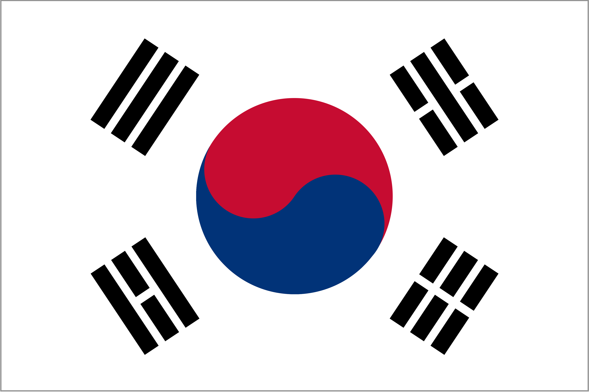

Korea
現在、日本では多くの韓国系の商品が輸入されていて、人気商品として売られています。 また、日本で活躍する韓国人のアーティストやアイドルも増えてきていて、時に日本の有名人よりも人気が出るケースもあります。韓国は世界中が注目している国と言えるでしょう。
韓国について
韓国とは歴史的な関係から、日本での韓流ブームなど色々な関係をもっている国であり、韓国の正式名称が「大韓民国」で、首都はソウルです。日本と同じく四季があります。人口は約5107万人で、世界で25番目に多い国であり、日本は1.27億なので、大体日本の半分よりちょっと少ない人口です。

韓国といえば、「美容整形」を思い浮かべる人も多いほど、美意識の高い国であることが特徴です。「美しい外見を持っていること」は、就職の面接時の評価基準や、結婚相手に求める条件の一つになるとも言われています。日本では、整形に対してネガティブなイメージを持つ人もいますが、韓国人の間では整形するのは当たり前で、それを他人に隠したりすることもないと言われている。
韓国では、もともとクレジットカードの普及がかなり進んでおり、屋台や個人店など基本的にどこでもカードが使えます。最近は、電子決済が主流になってきており、日本よりもキャッシュレス化が進んでいます。出掛けるときは、携帯とカードだけという人も多いそうです。
- 参考サイト:https://haryu-korea.net/japan-korea-differences